Bread
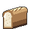
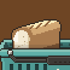
€5 · No rule
Tin loaf with its cut end facing you; its look-alike Day-old buns is three buns in a tied bag.
The 13 sprites drawn for the products a new profile stocks that had none. Each is shown at 1x, at 2x (its size on the belt and in the baskets), on teal, and cropped from a game capture with its price sticker. Clearance products carry no shared "reduced" mark; damage shows only where the name is the joke. The page loads the real sprites from art/items_v2/, so it always shows the current art.


€5 · No rule
Tin loaf with its cut end facing you; its look-alike Day-old buns is three buns in a tied bag.
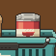
€5 · Pays 0 if beside a Frozen product
Upright tin, tomato label with a bowl; Dented can is a tin lying on its side.
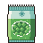
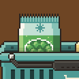
€3 · + its base value (+3) as a flat bonus if beside another Frozen product
Crimped pillow bag, frost-teal top with a snowflake, peas in a window.
€2 · +3 if beside a Bakery product
A low, long block under a paper wrapper with a teal band, the wrapper folded back at the left end over the pale butter (redrawn: the first draft read as a tissue box).
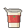
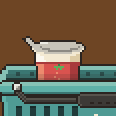
€2 · +3 if immediately after Banana
Small tapered pot, foil lid peeled back, strawberry label.
€2 · +3 if beside a Clearance product
Wide squat tub with a teal snap-on lid and a spoon label: a different shape from Yogurt, no reduced mark.
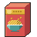
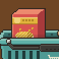
€2 · +3 if beside Milk
Tall carton in 3/4 view, a bowl of flakes on the front.
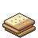
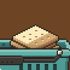
€2 · +3 if beside Soup
Three thin square crackers stacked on the diagonal, the top one pale with a 3x3 grid of docking holes (redrawn: the first draft read as toast).
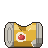
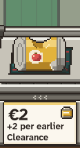
€2 · +2 for each earlier Clearance product
A tin lying on its side with a deep dent, a tomato on its label and ridged lid rims: the dent is the joke (redrawn: the first draft read as a battery).
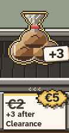
€2 · +3 if immediately after a Clearance product
Three dry, cracked buns in a film bag with a twist tie.
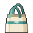
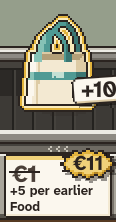
€1 · +5 for each earlier Food product
Open cream bag with teal loop handles, unlike the hand's teal baskets.
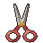
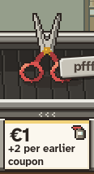
€1 · +2 for each earlier coupon
Steel blades, tomato finger rings, brass pivot.
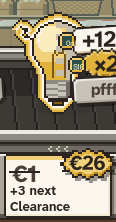
€1 · +3 to the next Clearance product
A bulb half lit, half dead, with flicker sparks: the flicker is the joke.
All 20 stocked products at 2x, at 1x on cream and teal, and in greyscale, with the look-alike pairs side by side.
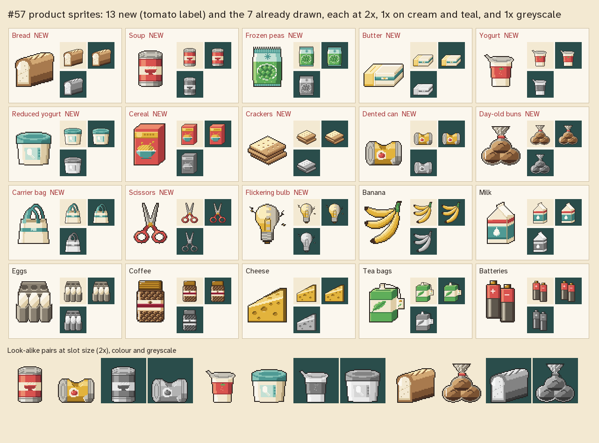
The shift screen (debug/screen_capture) with eight new sprites in the baskets and five on the belt.
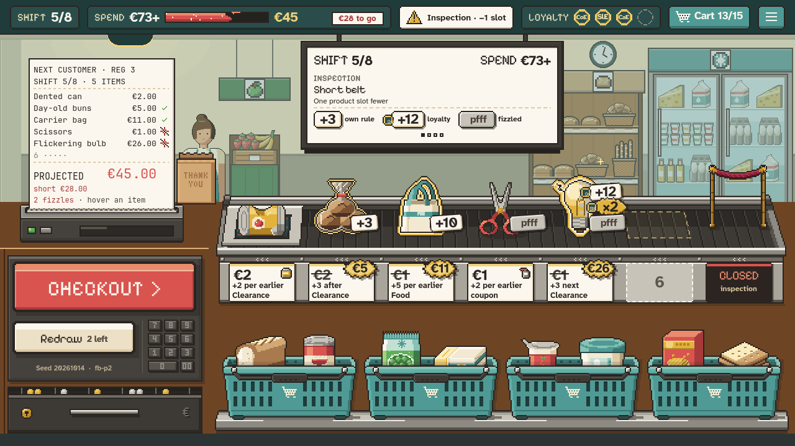
art/src/production_log.tsv.